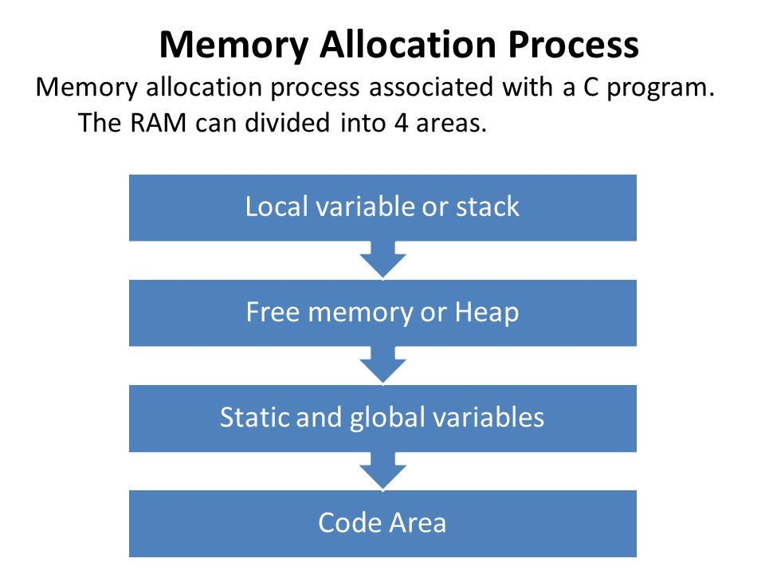

Memory Allocation
Before you learn C Dynamic Memory allocation, let’s understand:
How Memory Management in C works?

When you declare a variable using a basic data type, the C compiler automatically allocates memory space for the variable in a pool of memory called the stack.
For example, a float variable takes typically 4 bytes (according to the platform) when it is declared. We can verify this information using the sizeof operator as shown in below example:
#include <stdio.h>
int main()
{
float x;
printf("The size of float is %d bytes", sizeof(x));
return 0;
}
The output will be:
The size of float is 4 bytes
Also, an array with a specified size is allocated in contiguous blocks of memory, each block has the size for one element:
#include <stdio.h>
int main()
{
float arr[10];
printf("The size of the float array with 10 element is %d", sizeof(arr));
return 0;
The result is:
The size of the float array with 10 element is 40
After declaring a basic data type or an array, the memory is automatically managed. However, there is a process for allocating memory in C which will permit you to implement a program in which the array size is undecided until you run your program (runtime). This process is called “Dynamic memory allocation.â€
Dynamic Memory Allocation in C
Dynamic Memory Allocation is manual allocation and freeing of memory according to your programming needs and enables the C programmer to allocate memory at runtime. Dynamic memory allocation in c language is possible by 4 functions of stdlib.h header file.
Before learning above functions, let's understand the difference between static memory allocation and dynamic memory allocation.
| Static memory allocation | Dynamic memory allocation |
|---|---|
| Memory is allocated at compile time. | Memory is allocated at run time. |
| Memory can't be increased while executing program. | Memory can be increased while executing program. |
| Used in array. | Used in linked list. |
Now let's have a quick look at the methods used for dynamic memory allocation.
| Function | Purpose |
| malloc() | Allocates the memory of requested size and returns the pointer to the first byte of allocated space. |
| calloc() | Allocates the space for elements of an array. Initializes the elements to zero and returns a pointer to the memory. |
| realloc() | It is used to modify the size of previously allocated memory space. |
| Free() | Frees or empties the previously allocated memory space. |
Let’s discuss the above functions with their application:
C malloc() Function
The C malloc() function stands for memory allocation. It is a function which is used to allocate a block of memory dynamically. It reserves memory space of specified size and returns the null pointer pointing to the memory location. The pointer returned is usually of type void. It means that we can assign C malloc() function to any pointer.
Syntax of malloc() Function:
ptr = (cast_type *) malloc (byte_size);
Here,
- ptr is a pointer of cast_type.
- The C malloc() function returns a pointer to the allocated memory of byte_size.
Example of malloc():
Example: ptr = (int *) malloc (50)
When this statement is successfully executed, a memory space of 50 bytes is reserved. The address of the first byte of reserved space is assigned to the pointer ptr of type int.
Consider another example:
#include <stdlib.h>
int main()
{
int *ptr
ptr = malloc(15*sizeof(*ptr)); //a block of 15 integers
if (ptr != NULL)
{
*(ptr + 5) = 480; //assign 480 to sixth integer
printf("Value of the 6th integer is %d",*(ptr + 5));
}
}
Output:
Value of the 6th integer is 480
C calloc() Function
The C calloc() function stands for contiguous allocation. This function is used to allocate multiple blocks of memory. It is a dynamic memory allocation function which is used to allocate the memory to complex data structures such as arrays and structures.
Malloc() function is used to allocate a single block of memory space while the calloc() in C is used to allocate multiple blocks of memory space. Each block allocated by the calloc() function is of the same size.
Syntax of calloc() Function:
ptr = (cast_type *) calloc (n, size);
- The above statement is used to allocate n memory blocks of the same size.
- After the memory space is allocated, then all the bytes are initialized to zero.
- The pointer which is currently at the first byte of the allocated memory space is returned.
Whenever there is an error allocating memory space such as the shortage of memory, then a null pointer is returned.
Example of malloc():
The program below calculates the sum of an arithmetic sequence.
#include <stdlib.h>
int main()
{
int i, * ptr, sum = 0;
ptr = calloc(10, sizeof(int));
if (ptr == NULL)
{
printf("Error! memory not allocated.");
exit(0);
{
printf("Building and calculating the sequence sum of the first 10 terms \ n ");
for (i = 0; i < 10; ++i) { * (ptr + i) = i;
sum += * (ptr + i);
}
printf("Sum = %d", sum);
free(ptr);
return 0;
}
}
Output:
Value of the 6th integer is 480
C realloc() Function
If memory is not sufficient for malloc() or calloc(), you can reallocate the memory by realloc() function. In short, it changes the memory size.
realloc() can also be used to reduce the size of the previously allocated memory.
Syntax of realloc() Function:
ptr=realloc(ptr, new-size)
C free() Function
realloc() can also be used to reduce the size of the previously allocated memory.
Syntax of free() Function:
free(ptr)
Difference Between malloc() and calloc()
| malloc() | calloc() |
|---|---|
|
The name |
The name |
|
|
|
|
|
|
|
syntax of
Allocates
|
syntax of
Allocates a contiguous block of memory large enough to hold
|
|
|
|
Similarities Between malloc() and calloc()
The pointer returned by malloc or calloc has the proper alignment for the object in question, but it must be cast into the appropriate type.
Proper alignment means the value of the returned address is guaranteed to be an even multiple of alignment. The value of alignment must be a power of two and must be greater than or equal to the size of a word.
The malloc(), calloc() functions will fail if:
- The physical limits of the system are exceeded by
nbytes of memory which cannot be allocated. - There is not enough memory available to allocate
nbytes of memory; but the application could try again later.
Did you find this article helpful?